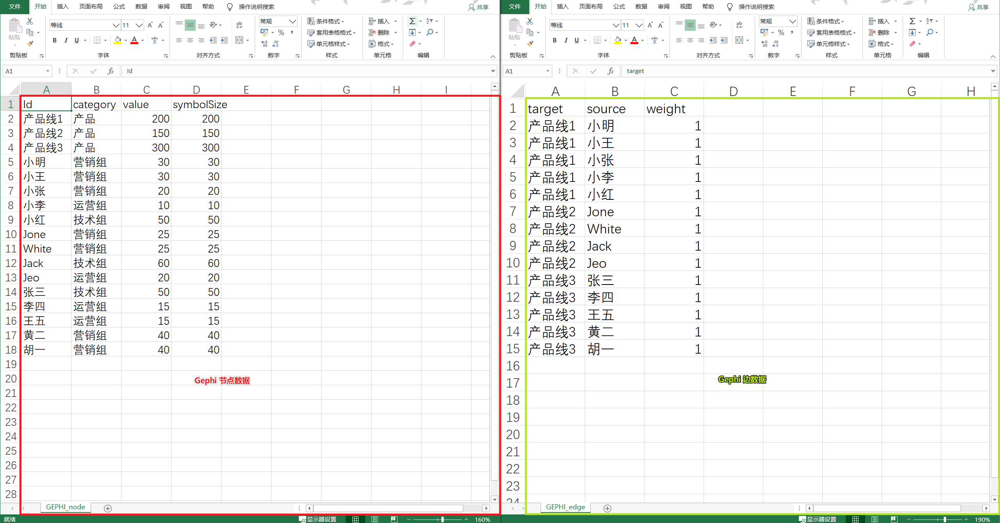
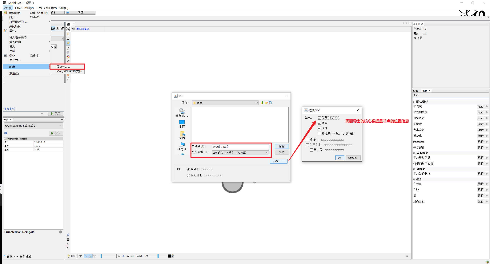
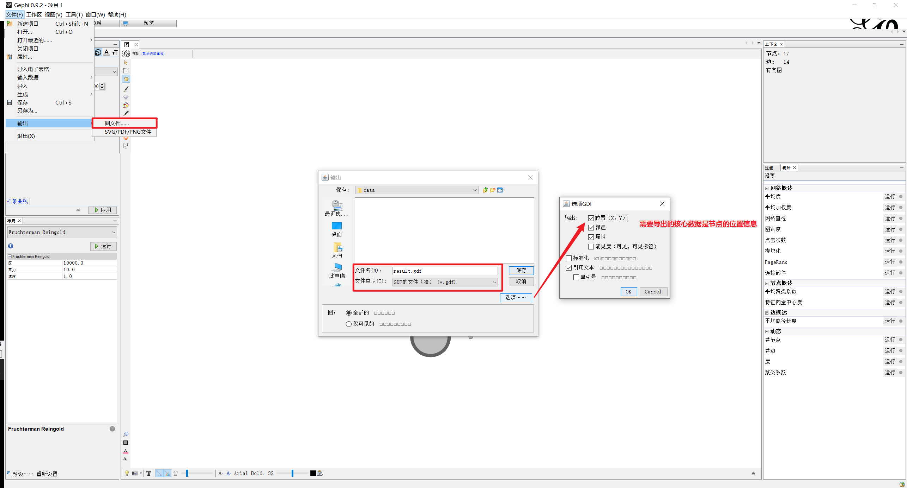
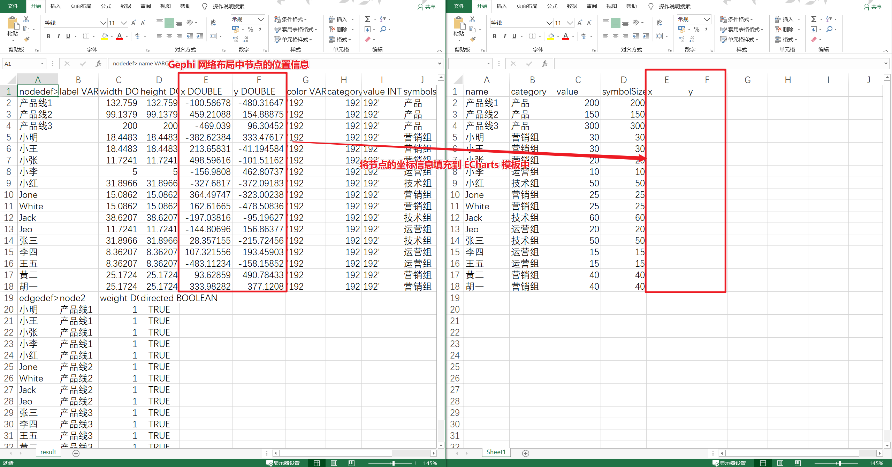
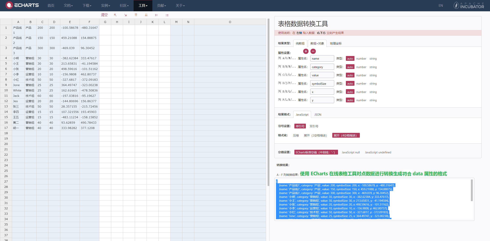
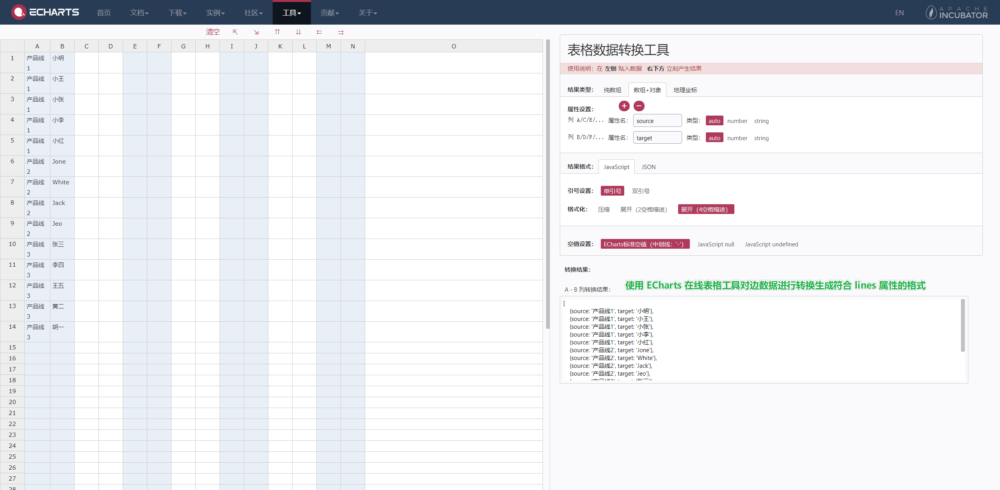

关系图
基础布局
基于节点数据中提供的 (x, y) 作为节点的位置。使用模板（目录 c06-3-02-template）处理数据。
- 参考
GEPHI_node模板.csv和GEPHI_edge模板.csv文档格式，准备 nodes 和 edges 数据，导入软件 Gephi 处理数据生成网络图。然后导出结果为.gdf格式的文档，将文档格式（后缀）直接修改为.csv，获得每个节点的坐标(x, y)位置信息。  

💡 如果使用 Excel 打开文件中文出现乱码情况，可以先将文件编码模式转换为 UTF-8。
 - 使用 ECharts 的在线表格工具处理数据生成相应的对象数组。  
环形布局
Chord Diagram 和弦图是显示数据之间的相互关系的图形方法。
基于基本布局的数据，只需要将节点布局方式 layout 修改为 'circular'。
力引导布局
Force Layout 采用力引导构建节点的布局。
基于基本布局的数据，只需要将节点布局方式 layout 修改为 'force'。